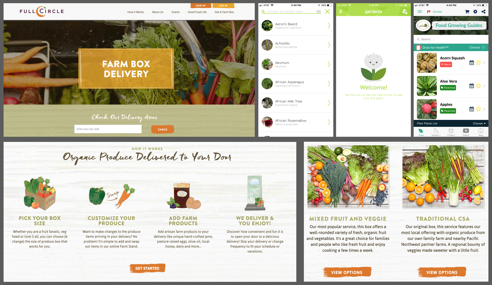
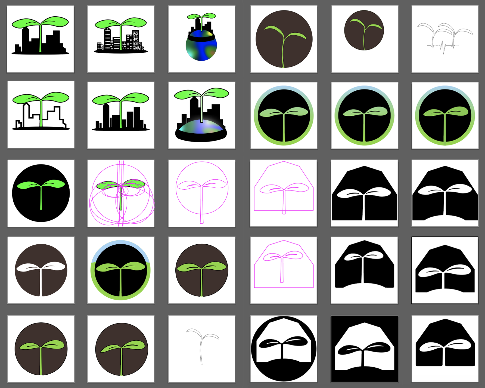
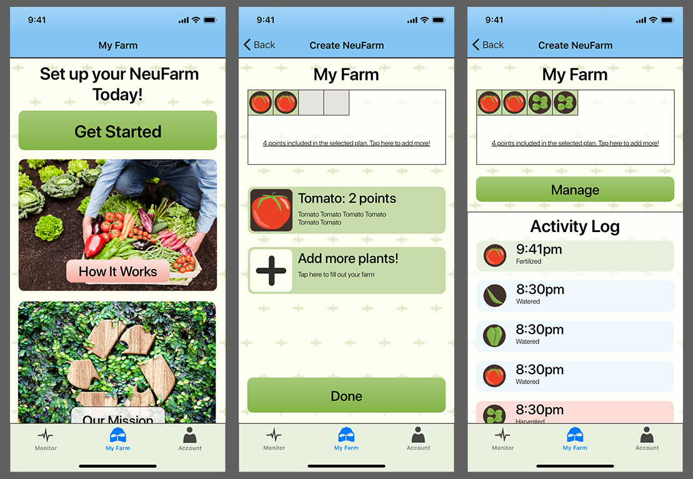

NeuFarms App Visual Design
Project Overview
Goal: NeuFarms aims to grow produce near the customer in hydroponic greenhouses. Neufarms needs a mobile app that will allow customers to interface with the greenhouse and grow exactly what they want, when they want.
Team:
- Nate Folsom (me) — Visual Designer, Project Manager, Information Architect
- Stephanie Mathison — User Researcher
- Same Caldwell — Interaction Designer
Duration: Three weeks.
During our initial meeting with the client, it became clear that I would be developing the branding for NeuFarms in addition to my aforementioned roles.
Project Management
As the project manager, I kicked off the project with a team meeting. We discussed deliverables and deadlines in order to create a statement of work that could be sent to the client.
Over the course of the project I was responsible for keeping in touch with the client through daily email updates, as well as arranging meetings.
Feature Prioritization
Fast-forward a bit in the project, we started to narrow down the MVP features for the app design. In order to do this, we brainstormed all possible features, including features that the client mentioned they were interested in including. Then, based on research, we sorted the features onto an Impact vs. Expectation matrix.
Through this exercise, we found that the most important features would be those centered around monitoring and customizing produce.

Information Architecture
In order to determine the names of the tabs in the app, I facilitated a card sort activity with the team. By sorting the features we decided upon previously, we came to the conclusion that there would be three tabs: My farm, monitor, and account.
My Farm — On this tab, users will be able to start a new farm, manage their current farm, and see what actions are currently being taken on their plants through an activity log.
Monitor — Plant progress, carbon footprint, farm livestream, and other data related to plant growth can be found on this tab.
Account — Users will be able to receive support and edit important information such as delivery and payment on this navigation tab.
Visual Design — Research
Outside of these team activities, I was also researching agricultural visual design and branding on my own. Some of the places that I looked included CSA websites, gardening apps, and agricultural marketing agencies.  Common themes that I noticed included agricultural imagery and the use of certain colors. Green was used extensively for backgrounds and some calls to action. Warm colors were also prevalent in calls to action. From these sources it became clear that the NeuFarms should incorporate some of the same.
Logo Development
During the first week I also started working on a logo based off of concept sketches that the client had proivided. I started off by hand sketching and exploring new ideas around the theme.
After I had established a clear design direction, I took my sketching into into Adobe Illustrator for further iteration and refinement. Throughought the process I kept the client up to date on logo work to make sure that the design direction aligned with their vision of the NeuFarms brand.
Brand Identity
In order to solidify the brand identity, I sat down with the client and facilitated a branding card activity.
After some further refining via email, we settled on the words Sustainable, Custom, and Empowering.
Moodboard
To further create the brand identity, I put together a moodboard using images that the client provided. In order to get the images, I asked the client to send me images that they felt represented the brand identity. Going through several iterations, I refined the moodbaord until each theme was represented, but not more than once.

Color Selection
After the images were condensed down to a place I was happy with, I pulled colors from the moodboard for a color palette.
I chose colors that would represent a sunny day on a farm.
Color Palette
Next I created four extra shades of each color that could be used in illustrations as highlights/lowlights or in the screen designs.
Typography
For the text in the NeuFarms app I decided to use the system font, San Francisco, because we are designing for an iPhone app. SF has a familir look that will help welcome customers to the app, and a it has been carefully designed for legibility on phone displays. It also has the sleek Apple feel to it, which fits in nicelyto the NeuFarms brand.
Screen Elements
Using the colors and an initial wireframe I started experimenting with colors for the background, header bar, and tab bar. A blue sky gradient header bar, off-white background with sprout rows, and a light green tab bar.
In order to create a more polished appearance and game-ified/fun atmosphere within the app, I created a set of icons that would represent produce.  There is a small version of each icon which can be used as a visual representation of farm blocks allotted to each crop. The larger icons are used for representing crops during the selection and management process.
The UI elements include a variety of boxes, cards and buttons. The UI elements all use a 10px corner radius in order to make them more visually appealing. For the action buttons, I used a slight gradient in order to give additional depth and make them more appealing to tap on.

Style Guide
I compiled all of my design elements and choices into a style guide for the client. This can be used to inform future work on the app and make sure that any new branding content is consistent with the material that I produced.
Next Steps
In order to begin gaining interest and potential customers, Neufarms needs to create a "smoke test." Without any need to invest in app development or constructing a farm, NeuFarms can gauge interest in their product and adjust accordingly. In order to do this, screens from our app design will be used to create a concept product that can be sold to people. As Visual Designer, my next steps in the product would be to use the brand styling that I developed in order to create an appealing piece of content to send out to market.